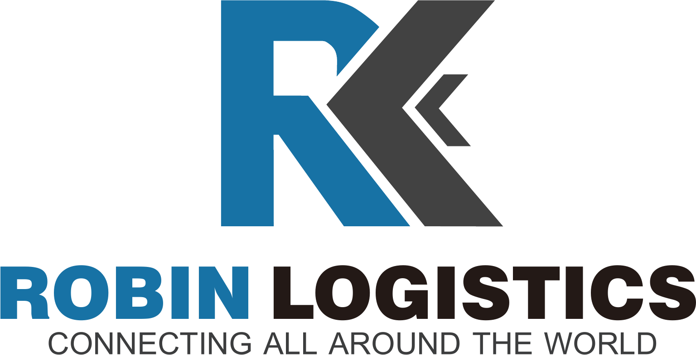

Factory coordination
Cargo-ready dates, pickup windows and shipping requirements.

Request a quoteCustoms & origin services
We coordinate the practical requirements between factories, truckers, warehouses, customs brokers and carriers.
What we manage
Cargo-ready dates, pickup windows and shipping requirements.
Declaration coordination and document checks before cut-off.
Commercial documents, shipping instructions and bill of lading review.
Fast follow-up when cargo, schedules or documentation change.
What this means for you
Fewer missed cut-offs.
Better document accuracy.
Clear ownership across origin activities.
Earlier action when exceptions arise.
Plan your next shipment